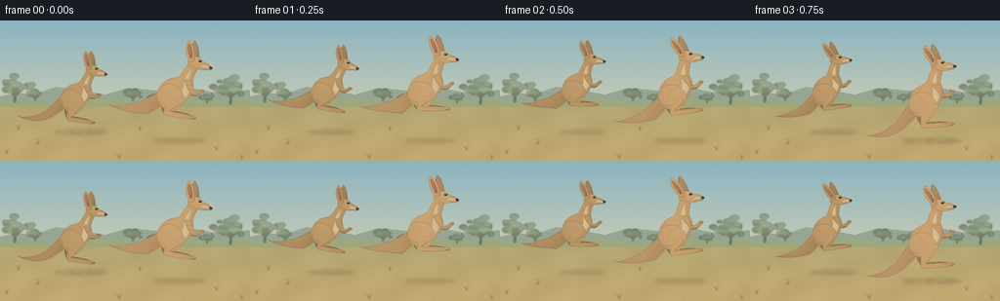
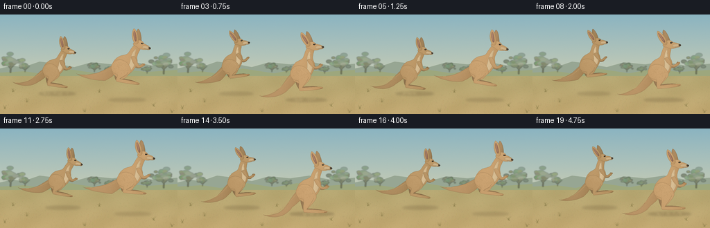

CODING AGENTS AS PIXEL WORLD MODELS
traex/GPT-6.1-Sol · instance_preservation_0008
点击播放 · 原生 RGB 像素
逐轮保存的候选
回放视频、检查图与代码变化。
每份候选均可单独播放。实际图片检查记录在下方工具轨迹中。
候选 01播放与检查图
点击播放 · 原生 RGB 像素


展开代码变化
--- 上一保存版本
+++ 本次保存版本
@@ -0,0 +1,182 @@
+from pathlib import Path
+import math, json
+import numpy as np
+from PIL import Image, ImageDraw, ImageFilter
+import artifact_io
+
+ROOT = Path(__file__).resolve().parent
+SPEC = json.loads((ROOT/'task_spec.json').read_text())
+W,H,S = SPEC['width'],SPEC['height'],4
+SW,SH=W*S,H*S
+rng=np.random.default_rng(31459)
+
+def bez(start, *curves):
+ out=[start]; p=np.array(start,float)
+ for c1,c2,end in curves:
+ a,b,c=map(lambda p:np.array(p,float),(c1,c2,end))
+ for t in np.linspace(0,1,15)[1:]:
+ q=(1-t)**3*p+3*(1-t)**2*t*a+3*(1-t)*t*t*b+t**3*c
+ out.append(tuple(q))
+ p=c
+ return out
+
+def landscape():
+ yy,xx=np.mgrid[0:SH,0:SW]; y=yy/S
+ sky=np.array([139,180,193])[None,None,:]*(1-y[:,:,None]/H)+np.array([235,218,173])[None,None,:]*(y[:,:,None]/H)
+ grain=rng.normal(0,.65,(SH,SW,1))
+ bg=Image.fromarray(np.uint8(np.clip(sky+grain,0,255)))
+ d=ImageDraw.Draw(bg)
+ def poly(p,c): d.polygon([(x*S,y*S) for x,y in p],fill=c)
+ poly([(0,78),(17,74),(34,76),(57,68),(81,71),(107,76),(132,69),(162,72),(190,68),(220,74),(256,71),(256,100),(0,100)],(151,166,147))
+ poly([(0,84),(35,82),(62,86),(93,78),(139,85),(172,79),(213,83),(256,80),(256,103),(0,103)],(157,167,125))
+ # Eucalypts on the distant savanna edge.
+ tr=Image.new('RGBA',(SW,SH)); td=ImageDraw.Draw(tr)
+ for x,y,size in [(15,84,19),(36,83,10),(236,86,21),(212,85,8),(136,83,10),(157,84,7)]:
+ td.line([(x*S,y*S),((x+.6)*S,(y-size*.72)*S)],fill=(111,113,88,200),width=max(2,int(size*.095*S)))
+ for bx in [-.42,.30,.55]:
+ td.line([(x*S,(y-size*.35)*S),((x+bx*size)*S,(y-size*.85)*S)],fill=(115,120,92,190),width=2*S)
+ for j in range(35):
+ cx=x+rng.normal(0,size*.35); cy=y-size*.85+rng.normal(0,size*.16); rx=rng.uniform(1.4,3.8)*size/15; ry=rx*.58
+ col=(int(rng.integers(99,135)),int(rng.integers(123,146)),int(rng.integers(88,111)),int(rng.integers(120,210)))
+ td.ellipse(((cx-rx)*S,(cy-ry)*S,(cx+rx)*S,(cy+ry)*S),fill=col)
+ tr=tr.filter(ImageFilter.GaussianBlur(.65*S)); bg=Image.alpha_composite(bg.convert('RGBA'),tr).convert('RGB')
+ a=np.array(bg).astype(float)
+ land=yy/S>=89
+ f=np.clip((yy/S-89)/55,0,1)
+ top=np.array([181,167,114]); bot=np.array([194,168,113])
+ ground=top[None,None,:]*(1-f[:,:,None])+bot[None,None,:]*f[:,:,None]
+ mott=(np.sin(xx/34+np.sin(yy/43))*1.5+np.sin(xx/72+yy/25)*2.0+rng.normal(0,1.8,(SH,SW)))[:,:,None]
+ a[land]=(ground+mott)[land]
+ bg=Image.fromarray(np.uint8(np.clip(a,0,255))); d=ImageDraw.Draw(bg,'RGBA')
+ for i in range(2100):
+ x=rng.uniform(-4,W+4); y0=rng.uniform(89,H+3); depth=(y0-88)/56
+ ht=rng.uniform(.5,2.4)*(.35+depth); dx=rng.uniform(-1.5,1.5)
+ c=(int(rng.integers(136,201)),int(rng.integers(123,174)),int(rng.integers(76,117)),int(rng.integers(40,110)))
+ d.line([(x*S,y0*S),((x+dx)*S,(y0-ht)*S)],fill=c,width=max(1,int(.23*S*(.4+depth))))
+ # Delicate foreground tufts.
+ for x,y0 in [(7,137),(39,127),(122,141),(222,133),(248,142),(19,112),(143,113)]:
+ for j in range(13):
+ ht=rng.uniform(2,7)*(y0/144); dx=rng.uniform(-4,4)
+ p=bez((x+rng.uniform(-2,2),y0),((x,y0-ht*.3),(x+dx*.6,y0-ht*.8),(x+dx,y0-ht)))
+ d.line([(px*S,py*S) for px,py in p],fill=(136,123,73,155),width=1)
+ return bg
+
+BG=landscape()
+# Reusable deterministic natural fur noise field.
+texrng=np.random.default_rng(118)
+noise=texrng.normal(0,1,(SH,SW))
+noiseim=Image.fromarray(np.uint8(np.clip(128+noise*30,0,255))).filter(ImageFilter.GaussianBlur(.24*S))
+fur=(np.array(noiseim).astype(float)-128)/18
+
+class Roo:
+ def __init__(self,img,x,ground,scale,phase,color):
+ self.img=img; self.x=x; self.scale=scale; self.color=np.array(color)
+ # Ballistic arc, a brief landing interval, then take-off.
+ self.p=phase%1
+ self.flight=max(0,math.sin(math.pi*self.p))
+ self.lift=18*self.flight**.9
+ self.y=ground-self.lift*scale
+ self.ang=math.radians(-4+9*math.sin(2*math.pi*self.p))
+ self.c=math.cos(self.ang); self.s=math.sin(self.ang)
+ def trans(self,p):
+ x,y=p; y+=30
+ return ((self.x+self.scale*(x*self.c-y*self.s))*S,(self.y+self.scale*(x*self.s+y*self.c-30))*S)
+ def line(self,points,c,width=.4):
+ d=ImageDraw.Draw(self.img)
+ d.line([self.trans(p) for p in points],fill=c,width=max(1,int(width*self.scale*S)),joint='curve')
+ def shape(self,p,color=None,shade=1,detail=True):
+ pts=[self.trans(q) for q in p]
+ mask=Image.new('L',(SW,SH)); md=ImageDraw.Draw(mask); md.polygon(pts,fill=255)
+ bbox=mask.getbbox()
+ if not bbox:return
+ x0,y0,x1,y1=bbox
+ m=np.array(mask.crop(bbox))/255.
+ yy,xx=np.mgrid[y0:y1,x0:x1]
+ ux=(xx-x0)/max(1,x1-x0); uy=(yy-y0)/max(1,y1-y0)
+ edge=np.array(mask.filter(ImageFilter.GaussianBlur(1.1*S)).crop(bbox))/255
+ lighting=7*(1-uy)-10*ux+10*np.sin(np.pi*ux)+8*(edge-1)
+ col=self.color if color is None else np.array(color)
+ arr=col[None,None,:]*shade+lighting[:,:,None]+fur[y0:y1,x0:x1,None]*1.6
+ patch=Image.fromarray(np.uint8(np.clip(arr,0,255)))
+ self.img.paste(patch,(x0,y0),mask.crop(bbox))
+ # Subtle hair-edge boundary rather than a cartoon black outline.
+ d=ImageDraw.Draw(self.img)
+ outline=tuple(np.uint8(np.clip(col*shade*.78,0,255)))
+ d.line(pts+[pts[0]],fill=outline,width=max(1,int(.25*S*self.scale)),joint='curve')
+ def draw(self):
+ f=self.flight; p=self.p
+ # Tail is thick at its root, long and smoothly tapered, balancing the jump.
+ ty=-2-18*f; bend=-9-14*f
+ self.shape(bez((-10,-34),((-23,-27),(-28,bend),(-42,ty-1)),((-53,ty+2),(-60,ty+2),(-63,ty)),((-53,ty+6),(-34,ty+8),(-22,-10)),((-14,-15),(-6,-20),(-6,-28)),((-6,-31),(-8,-33),(-10,-34))),shade=.93)
+ self.line(bez((-13,-29),((-27,-18),(-39,ty+1),(-58,ty+1))),(189,155,104),.65)
+ # Far hind leg, partially hidden behind the body.
+ knee=(10,-21-6*f); ankle=(-2,-5-11*f); toe=(23,-1-12*f)
+ far=[(q[0]-3,q[1]-1) for q in [knee,ankle,toe]]
+ self.shape(bez((-3,-28),((3,-29),(10,-27),far[0]),((10,-15),(-5,-8),far[1]),((3,far[1][1]),(15,far[2][1]-2),far[2]),((24,far[2][1]+2),(13,far[2][1]+3),(-6,far[1][1]+4)),((-10,-13),(-13,-29),(-3,-28))),shade=.77)
+ # Rear ear and far forearm.
+ self.shape(bez((20,-64),((15,-70),(15,-82),(18,-86)),((22,-85),(25,-71),(24,-65)),((23,-63),(22,-63),(20,-64))),shade=.84)
+ self.shape(bez((12,-48),((19,-45),(20,-37),(22,-34)),((26,-34),(27,-38),(29,-38)),((31,-37),(29,-33),(24,-31)),((18,-30),(13,-35),(10,-42)),((9,-46),(9,-47),(12,-48))),shade=.82)
+ # Body: broad muscular haunch, narrower chest, long upright neck.
+ self.shape(bez((-9,-18),((-17,-22),(-16,-38),(-7,-44)),((-3,-48),(4,-47),(7,-51)),((10,-56),(12,-61),(17,-66)),((21,-65),(25,-63),(24,-59)),((22,-53),(19,-49),(20,-44)),((24,-34),(13,-24),(9,-20)),((5,-12),(-3,-13),(-9,-18))))
+ # Lighter breast and belly.
+ self.shape(bez((18,-58),((16,-48),(16,-45),(17,-42)),((20,-34),(13,-26),(6,-23)),((7,-30),(11,-36),(11,-44)),((12,-49),(13,-55),(18,-58))),color=(207,181,139),detail=False)
+ # Broad near thigh merges into narrow lower shin and long foot.
+ ky=-22-5*f; ay=-5-11*f; toy=-1-12*f
+ self.shape(bez((-8,-40),((2,-43),(11,-36),(13,ky)),((13,ky+5),(3,ay-4),(-2,ay)),((4,ay+1),(17,toy-2),(24,toy)),((28,toy+1),(27,toy+3),(22,toy+3)),((15,toy+3),(1,ay+5),(-6,ay+4)),((-9,ay),(-4,-16),(-6,-20)),((-17,-21),(-19,-35),(-8,-40))))
+ # Soft muscular contours.
+ self.line(bez((-7,-36),((2,-39),(8,-32),(8,-26))),(195,160,113),.7)
+ self.line(bez((9,ky+2),((6,ky+8),(0,ay-3),(-2,ay))),(131,101,66),.45)
+ self.line(bez((0,ay+3),((9,toy+2),(19,toy+1),(24,toy+1))),(199,166,117),.55)
+ self.line([(22,toy+2),(25,toy+2)],(81,64,45),.65)
+ # Near forearm: small arms carried curled close to the chest.
+ ex=21+2*math.sin(2*math.pi*p); wy=-36-2*f
+ self.shape(bez((14,-47),((18,-48),(19,-41),(ex,-36)),((23,-33),(27,wy),(29,wy)),((32,wy-1),(33,wy+1),(30,wy+3)),((28,wy+5),(23,-31),(20,-33)),((16,-35),(13,-41),(12,-44)),((11,-46),(12,-47),(14,-47))),shade=.97)
+ self.line([(29,wy+1),(32,wy+2)],(103,79,52),.45)
+ # Long, narrow face with a blunt dark muzzle, not a rabbit face.
+ self.shape(bez((14,-67),((18,-72),(26,-71),(28,-66)),((31,-65),(36,-63),(37,-61)),((39,-59),(36,-57),(32,-58)),((28,-57),(22,-57),(18,-61)),((13,-62),(12,-64),(14,-67))))
+ self.shape(bez((28,-63),((32,-63),(37,-62),(37,-60)),((36,-57),(30,-58),(26,-60)),((25,-61),(26,-62),(28,-63))),color=(198,169,126))
+ # Near long upright pointed ear, gently rocking with the motion.
+ tilt=1.3*math.sin(2*math.pi*p)
+ self.shape(bez((15,-65),((9,-72),(8+tilt,-82),(11+tilt,-86)),((15+tilt,-85),(20,-74),(20,-67)),((19,-64),(17,-64),(15,-65))))
+ self.shape(bez((15,-69),((12,-75),(10.6+tilt,-82),(11.7+tilt,-83)),((14+tilt,-81),(17,-74),(17,-69)),((16,-68),(16,-68),(15,-69))),color=(151,111,89))
+ self.line(bez((12+tilt,-82),((13+tilt,-79),(14,-74),(15,-71))),(191,145,116),.55)
+ # Small glossy eye with lid and eye corner.
+ self.shape(bez((24,-66),((24.6,-67.1),(26.4,-67.3),(27,-66.3)),((27.1,-65.3),(25.5,-64.8),(24.3,-65.3)),((23.9,-65.5),(24,-65.8),(24,-66))),color=(44,36,26))
+ self.line([(24,-67),(26,-67.2)],(137,103,65),.5)
+ d=ImageDraw.Draw(self.img)
+ cx,cy=self.trans((25.7,-66.4)); rr=.29*S*self.scale
+ d.ellipse((cx-rr,cy-rr,cx+rr,cy+rr),fill=(235,224,196))
+ self.shape(bez((35,-61.4),((37,-61.6),(38,-61.1),(38,-60)),((38,-59),(36.5,-58.7),(35.7,-59.1)),((35,-59.7),(34.8,-60.5),(35,-61.4))),color=(71,61,48))
+ self.line(bez((36,-58.8),((34,-58.4),(31,-59),(29,-59.2))),(99,78,54),.4)
+ # Fine directional fur marks, clipped to solid body, lend a natural surface.
+ fr=np.random.default_rng(905)
+ for i in range(105):
+ x=fr.uniform(-12,11); y=fr.uniform(-40,-22)
+ if ((x+2)/14)**2+((y+30)/13)**2>1: continue
+ self.line([(x,y),(x-.5,y+fr.uniform(.55,1.3))],(184,147,99),.17)
+ for i in range(25):
+ x=fr.uniform(11,18); y=fr.uniform(-60,-45)
+ self.line([(x,y),(x-.3,y+1)],(204,172,125),.14)
+
+def frame(i):
+ img=BG.copy()
+ t=i/SPEC['fps']
+ shadows=Image.new('RGBA',(SW,SH)); d=ImageDraw.Draw(shadows)
+ actors=[(75+3*t,114,.89,(t/1.3+.12)%1,(180,144,96)),(176+3*t,123,1.03,(t/1.3+.30)%1,(193,153,104))]
+ for x,y,sc,p,c in actors:
+ f=math.sin(math.pi*p)
+ alpha=int(65-26*f); width=(24-6*f)*sc
+ d.ellipse(((x-width)*S,(y-1.8)*S,(x+width+15)*S,(y+3)*S),fill=(87,66,41,alpha))
+ if p<.15 or p>.85:
+ dust=np.random.default_rng(555+i)
+ for j in range(13):
+ xx=x+dust.uniform(-12,24); yy=y+dust.uniform(-2,2); r=dust.uniform(.3,1.2)
+ d.ellipse(((xx-r)*S,(yy-r)*S,(xx+r)*S,(yy+r)*S),fill=(220,193,145,30))
+ shadows=shadows.filter(ImageFilter.GaussianBlur(1.6*S))
+ img=Image.alpha_composite(img.convert('RGBA'),shadows).convert('RGB')
+ for x,y,sc,p,c in actors:Roo(img,x,y,sc,p,c).draw()
+ return np.array(img.resize((W,H),Image.Resampling.LANCZOS))
+
+frames=np.stack([frame(i) for i in range(SPEC['frames'])]).astype(np.uint8)
+artifact_io.save(frames,ROOT)
+print('Saved',frames.shape)
可观测工具轨迹
实际执行的命令与返回图片。
命令 1exit 0
/bin/bash -lc 'ls -la && cat prompt.txt && cat GENERATION_RULES.md && cat task_spec.json'
命令 2exit 0
/bin/bash -lc "cat artifact_io.py && python - <<'PY'
import PIL,numpy
print('PIL',PIL.__version__)
PY"命令 3exit 1
/bin/bash -lc "cat > generate.py <<'PY'
from pathlib import Path
import math, json
import numpy as np
from PIL import Image, ImageDraw, ImageFilter
import artifact_io
ROOT = Path(__file__).resolve().parent
SPEC = json.loads((ROOT/'task_spec.json').read_text())
W,H,S = SPEC['width'],SPEC['height'],4
SW,SH=W*S,H*S
rng=np.random.default_rng(31459)
def bez(start, *curves):
out=[start]; p=np.array(start,float)
for c1,c2,end in curves:
a,b,c=map(lambda p:np.array(p,float),(c1,c2,end))
for t in np.linspace(0,1,15)[1:]:
q=(1-t)**3*p+3*(1-t)**2*t*a+3*(1-t)*t*t*b+t**3*c
out.append(tuple(q))
p=c
return out
def landscape():
yy,xx=np.mgrid[0:SH,0:SW]; y=yy/S
sky=np.array([139,180,193])[None,None,:]*(1-y[:,:,None]/H)+np.array([235,218,173])[None,None,:]*(y[:,:,None]/H)
grain=rng.normal(0,.65,(SH,SW,1))
bg=Image.fromarray(np.uint8(np.clip(sky+grain,0,255)))
d=ImageDraw.Draw(bg)
def poly(p,c): d.polygon([(x*S,y*S) for x,y in p],fill=c)
poly([(0,78),(17,74),(34,76),(57,68),(81,71),(107,76),(132,69),(162,72),(190,68),(220,74),(256,71),(256,100),(0,100)],(151,166,147))
poly([(0,84),(35,82),(62,86),(93,78),(139,85),(172,79),(213,83),(256,80),(256,103),(0,103)],(157,167,125))
# Eucalypts on the distant savanna edge.
tr=Image.new('RGBA',(SW,SH)); td=ImageDraw.Draw(tr)
for x,y,size in [(15,84,19),(36,83,10),(236,86,21),(212,85,8),(136,83,10),(157,84,7)]:
td.line([(x*S,y*S),((x+.6)*S,(y-size*.72)*S)],fill=(111,113,88,200),width=max(2,int(size*.095*S)))
for bx in [-.42,.30,.55]:
td.line([(x*S,(y-size*.35)*S),((x+bx*size)*S,(y-size*.85)*S)],fill=(115,120,92,190),width=2*S)
for j in range(35):
cx=x+rng.normal(0,size*.35); cy=y-size*.85+rng.normal(0,size*.16); rx=rng.uniform(1.4,3.8)*size/15; ry=rx*.58
col=(int(rng.integers(99,135)),int(rng.integers(123,146)),int(rng.integers(88,111)),int(rng.integers(120,210)))
td.ellipse(((cx-rx)*S,(cy-ry)*S,(cx+rx)*S,(cy+ry)*S),fill=col)
tr=tr.filter(ImageFilter.GaussianBlur(.65*S)); bg=Image.alpha_composite(bg.convert('RGBA'),tr).convert('RGB')
a=np.array(bg).astype(float)
land=y>=89
f=np.clip((y-89)/55,0,1)
top=np.array([181,167,114]); bot=np.array([194,168,113])
ground=top[None,None,:]*(1-f[:,:,None])+bot[None,None,:]*f[:,:,None]
mott=(np.sin(xx/34+np.sin(yy/43))*1.5+np.sin(xx/72+yy/25)*2.0+rng.normal(0,1.8,(SH,SW)))[:,:,None]
a[land]=(ground+mott)[land]
bg=Image.fromarray(np.uint8(np.clip(a,0,255))); d=ImageDraw.Draw(bg,'RGBA')
for i in range(2100):
x=rng.uniform(-4,W+4); y0=rng.uniform(89,H+3); depth=(y0-88)/56
ht=rng.uniform(.5,2.4)*(.35+depth); dx=rng.uniform(-1.5,1.5)
c=(int(rng.integers(136,201)),int(rng.integers(123,174)),int(rng.integers(76,117)),int(rng.integers(40,110)))
d.line([(x*S,y0*S),((x+dx)*S,(y0-ht)*S)],fill=c,width=max(1,int(.23*S*(.4+depth))))
# Delicate foreground tufts.
for x,y0 in [(7,137),(39,127),(122,141),(222,133),(248,142),(19,112),(143,113)]:
for j in range(13):
ht=rng.uniform(2,7)*(y0/144); dx=rng.uniform(-4,4)
p=bez((x+rng.uniform(-2,2),y0),((x,y0-ht*.3),(x+dx*.6,y0-ht*.8),(x+dx,y0-ht)))
d.line([(px*S,py*S) for px,py in p],fill=(136,123,73,155),width=1)
return bg
BG=landscape()
# Reusable deterministic natural fur noise field.
texrng=np.random.default_rng(118)
noise=texrng.normal(0,1,(SH,SW))
noiseim=Image.fromarray(np.uint8(np.clip(128+noise*30,0,255))).filter(ImageFilter.GaussianBlur(.24*S))
fur=(np.array(noiseim).astype(float)-128)/18
class Roo:
def __init__(self,img,x,ground,scale,phase,color):
self.img=img; self.x=x; self.scale=scale; self.color=np.array(color)
# Ballistic arc, a brief landing interval, then take-off.
self.p=phase%1
self.flight=max(0,math.sin(math.pi*self.p))
self.lift=18*self.flight**.9
self.y=ground-self.lift*scale
self.ang=math.radians(-4+9*math.sin(2*math.pi*self.p))
self.c=math.cos(self.ang); self.s=math.sin(self.ang)
def trans(self,p):
x,y=p; y+=30
return ((self.x+self.scale*(x*self.c-y*self.s))*S,(self.y+self.scale*(x*self.s+y*self.c-30))*S)
def line(self,points,c,width=.4):
d=ImageDraw.Draw(self.img)
d.line([self.trans(p) for p in points],fill=c,width=max(1,int(width*self.scale*S)),joint='curve')
def shape(self,p,color=None,shade=1,detail=True):
pts=[self.trans(q) for q in p]
mask=Image.new('L',(SW,SH)); md=ImageDraw.Draw(mask); md.polygon(pts,fill=255)
bbox=mask.getbbox()
if not bbox:return
x0,y0,x1,y1=bbox
m=np.array(mask.crop(bbox))/255.
yy,xx=np.mgrid[y0:y1,x0:x1]
ux=(xx-x0)/max(1,x1-x0); uy=(yy-y0)/max(1,y1-y0)
edge=np.array(mask.filter(ImageFilter.GaussianBlur(1.1*S)).crop(bbox))/255
lighting=7*(1-uy)-10*ux+10*np.sin(np.pi*ux)+8*(edge-1)
col=self.color if color is None else np.array(color)
arr=col[None,None,:]*shade+lighting[:,:,None]+fur[y0:y1,x0:x1,None]*1.6
patch=Image.fromarray(np.uint8(np.clip(arr,0,255)))
self.img.paste(patch,(x0,y0),mask.crop(bbox))
# Subtle hair-edge boundary rather than a cartoon black outline.
d=ImageDraw.Draw(self.img)
outline=tuple(np.uint8(np.clip(col*shade*.78,0,255)))
d.line(pts+[pts[0]],fill=outline,width=max(1,int(.25*S*self.scale)),joint='curve')
def draw(self):
f=self.flight; p=self.p
# Tail is thick at its root, long and smoothly tapered, balancing the jump.
ty=-2-18*f; bend=-9-14*f
self.shape(bez((-10,-34),((-23,-27),(-28,bend),(-42,ty-1)),((-53,ty+2),(-60,ty+2),(-63,ty)),((-53,ty+6),(-34,ty+8),(-22,-10)),((-14,-15),(-6,-20),(-6,-28)),((-6,-31),(-8,-33),(-10,-34))),shade=.93)
self.line(bez((-13,-29),((-27,-18),(-39,ty+1),(-58,ty+1))),(189,155,104),.65)
# Far hind leg, partially hidden behind the body.
knee=(10,-21-6*f); ankle=(-2,-5-11*f); toe=(23,-1-12*f)
far=[(q[0]-3,q[1]-1) for q in [knee,ankle,toe]]
self.shape(bez((-3,-28),((3,-29),(10,-27),far[0]),((10,-15),(-5,-8),far[1]),((3,far[1][1]),(15,far[2][1]-2),far[2]),((24,far[2][1]+2),(13,far[2][1]+3),(-6,far[1][1]+4)),((-10,-13),(-13,-29),(-3,-28))),shade=.77)
# Rear ear and far forearm.
self.shape(bez((20,-64),((15,-70),(15,-82),(18,-86)),((22,-85),(25,-71),(24,-65)),((23,-63),(22,-63),(20,-64))),shade=.84)
self.shape(bez((12,-48),((19,-45),(20,-37),(22,-34)),((26,-34),(27,-38),(29,-38)),((31,-37),(29,-33),(24,-31)),((18,-30),(13,-35),(10,-42)),((9,-46),(9,-47),(12,-48))),shade=.82)
# Body: broad muscular haunch, narrower chest, long upright neck.
self.shape(bez((-9,-18),((-17,-22),(-16,-38),(-7,-44)),((-3,-48),(4,-47),(7,-51)),((10,-56),(12,-61),(17,-66)),((21,-65),(25,-63),(24,-59)),((22,-53),(19,-49),(20,-44)),((24,-34),(13,-24),(9,-20)),((5,-12),(-3,-13),(-9,-18))))
# Lighter breast and belly.
self.shape(bez((18,-58),((16,-48),(16,-45),(17,-42)),((20,-34),(13,-26),(6,-23)),((7,-30),(11,-36),(11,-44)),((12,-49),(13,-55),(18,-58))),color=(207,181,139),detail=False)
# Broad near thigh merges into narrow lower shin and long foot.
ky=-22-5*f; ay=-5-11*f; toy=-1-12*f
self.shape(bez((-8,-40),((2,-43),(11,-36),(13,ky)),((13,ky+5),(3,ay-4),(-2,ay)),((4,ay+1),(17,toy-2),(24,toy)),((28,toy+1),(27,toy+3),(22,toy+3)),((15,toy+3),(1,ay+5),(-6,ay+4)),((-9,ay),(-4,-16),(-6,-20)),((-17,-21),(-19,-35),(-8,-40))))
# Soft muscular contours.
self.line(bez((-7,-36),((2,-39),(8,-32),(8,-26))),(195,160,113),.7)
self.line(bez((9,ky+2),((6,ky+8),(0,ay-3),(-2,ay))),(131,101,66),.45)
self.line(bez((0,ay+3),((9,toy+2),(19,toy+1),(24,toy+1))),(199,166,117),.55)
self.line([(22,toy+2),(25,toy+2)],(81,64,45),.65)
# Near forearm: small arms carried curled close to the chest.
ex=21+2*math.sin(2*math.pi*p); wy=-36-2*f
self.shape(bez((14,-47),((18,-48),(19,-41),(ex,-36)),((23,-33),(27,wy),(29,wy)),((32,wy-1),(33,wy+1),(30,wy+3)),((28,wy+5),(23,-31),(20,-33)),((16,-35),(13,-41),(12,-44)),((11,-46),(12,-47),(14,-47))),shade=.97)
self.line([(29,wy+1),(32,wy+2)],(103,79,52),.45)
# Long, narrow face with a blunt dark muzzle, not a rabbit face.
self.shape(bez((14,-67),((18,-72),(26,-71),(28,-66)),((31,-65),(36,-63),(37,-61)),((39,-59),(36,-57),(32,-58)),((28,-57),(22,-57),(18,-61)),((13,-62),(12,-64),(14,-67))))
self.shape(bez((28,-63),((32,-63),(37,-62),(37,-60)),((36,-57),(30,-58),(26,-60)),((25,-61),(26,-62),(28,-63))),color=(198,169,126))
# Near long upright pointed ear, gently rocking with the motion.
tilt=1.3*math.sin(2*math.pi*p)
self.shape(bez((15,-65),((9,-72),(8+tilt,-82),(11+tilt,-86)),((15+tilt,-85),(20,-74),(20,-67)),((19,-64),(17,-64),(15,-65))))
self.shape(bez((15,-69),((12,-75),(10.6+tilt,-82),(11.7+tilt,-83)),((14+tilt,-81),(17,-74),(17,-69)),((16,-68),(16,-68),(15,-69))),color=(151,111,89))
self.line(bez((12+tilt,-82),((13+tilt,-79),(14,-74),(15,-71))),(191,145,116),.55)
# Small glossy eye with lid and eye corner.
self.shape(bez((24,-66),((24.6,-67.1),(26.4,-67.3),(27,-66.3)),((27.1,-65.3),(25.5,-64.8),(24.3,-65.3)),((23.9,-65.5),(24,-65.8),(24,-66))),color=(44,36,26))
self.line([(24,-67),(26,-67.2)],(137,103,65),.5)
d=ImageDraw.Draw(self.img)
cx,cy=self.trans((25.7,-66.4)); rr=.29*S*self.scale
d.ellipse((cx-rr,cy-rr,cx+rr,cy+rr),fill=(235,224,196))
self.shape(bez((35,-61.4),((37,-61.6),(38,-61.1),(38,-60)),((38,-59),(36.5,-58.7),(35.7,-59.1)),((35,-59.7),(34.8,-60.5),(35,-61.4))),color=(71,61,48))
self.line(bez((36,-58.8),((34,-58.4),(31,-59),(29,-59.2))),(99,78,54),.4)
# Fine directional fur marks, clipped to solid body, lend a natural surface.
fr=np.random.default_rng(905)
for i in range(105):
x=fr.uniform(-12,11); y=fr.uniform(-40,-22)
if ((x+2)/14)**2+((y+30)/13)**2>1: continue
self.line([(x,y),(x-.5,y+fr.uniform(.55,1.3))],(184,147,99),.17)
for i in range(25):
x=fr.uniform(11,18); y=fr.uniform(-60,-45)
self.line([(x,y),(x-.3,y+1)],(204,172,125),.14)
def frame(i):
img=BG.copy()
t=i/SPEC['fps']
shadows=Image.new('RGBA',(SW,SH)); d=ImageDraw.Draw(shadows)
actors=[(75+3*t,114,.89,(t/1.3+.12)%1,(180,144,96)),(176+3*t,123,1.03,(t/1.3+.30)%1,(193,153,104))]
for x,y,sc,p,c in actors:
f=math.sin(math.pi*p)
alpha=int(65-26*f); width=(24-6*f)*sc
d.ellipse(((x-width)*S,(y-1.8)*S,(x+width+15)*S,(y+3)*S),fill=(87,66,41,alpha))
if p<.15 or p>.85:
dust=np.random.default_rng(555+i)
for j in range(13):
xx=x+dust.uniform(-12,24); yy=y+dust.uniform(-2,2); r=dust.uniform(.3,1.2)
d.ellipse(((xx-r)*S,(yy-r)*S,(xx+r)*S,(yy+r)*S),fill=(220,193,145,30))
shadows=shadows.filter(ImageFilter.GaussianBlur(1.6*S))
img=Image.alpha_composite(img.convert('RGBA'),shadows).convert('RGB')
for x,y,sc,p,c in actors:Roo(img,x,y,sc,p,c).draw()
return np.array(img.resize((W,H),Image.Resampling.LANCZOS))
frames=np.stack([frame(i) for i in range(SPEC['frames'])]).astype(np.uint8)
artifact_io.save(frames,ROOT)
print('Saved',frames.shape)
PY
python generate.py"命令 4exit 0
/bin/bash -lc "python - <<'PY'
p='generate.py'
s=open(p).read().replace(' land=y>=89\\n f=np.clip((y-89)/55,0,1)',' land=yy/S>=89\\n f=np.clip((yy/S-89)/55,0,1)')
open(p,'w').write(s)
PY
python generate.py"视觉工具实际返回图片 1

保存候选 1 份；完成命令 4 次；可验证图片返回 1 张。原始 API 响应与完整日志保留在本地。